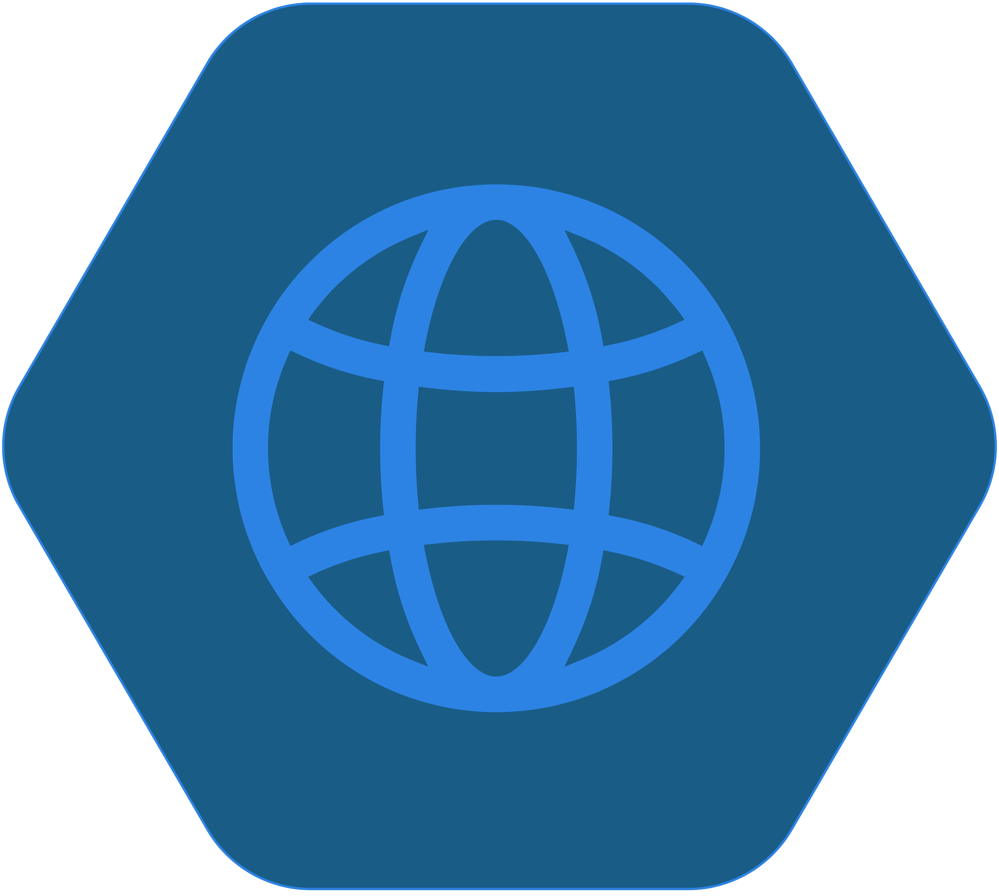

<div class="profile-card-container">
    <div class="background-overlay"></div>
  
    <div class="profile-content">
      <div class="profile-header">
        <!-- Use um caminho real para a imagem do mascote -->
        
        <h1 class="profile-name">Fabio Turati</h1>
        <p class="profile-subtitle"> DIRETOR DE ATENDIMENTO </p>
      </div>
  
      <div class="action-buttons">
        <button class="action-btn save-btn" (click)="saveContact()">
          <!-- Substitua pelo caminho real do ícone de salvar -->
           Salvar
        </button>
        <button class="action-btn share-btn" (click)="shareLink()">
          <!-- Substitua pelo caminho real do ícone de compartilhar -->
           Compartilhar
        </button>
      </div>
  
      <div class="contact-links">
        <a href="https://api.whatsapp.com/send?phone=5562992945627" class="contact-link-btn">
          <!-- Substitua pelo caminho real do ícone de telefone -->
           (62) 99294-5627
        </a>
        <a href="https://www.linkedin.com/in/fabio-cesar-turati/" target="_blank" rel="noopener noreferrer" class="contact-link-btn">
          <!-- Substitua pelo caminho real do ícone do LinkedIn -->
           Fabio Turati
        </a>
        <a href="mailto:fabio.cturati@totvs.com.br" class="contact-link-btn">
          <!-- Substitua pelo caminho real do ícone de email -->
           {{ 'fabio.cturati@totvs.com.br' }}
        </a>
        <a href="https://www.totvs.com" target="_blank" rel="noopener noreferrer" class="contact-link-btn">
          <!-- Substitua pelo caminho real do ícone de website -->
           {{ 'totvs.com' }}
        </a>
      </div>
  
      <div class="profile-footer">
        <p>Liderança em atendimento e relacionamento no Agro TOTVS.</p>
      </div>
    </div>
  
    <!-- Placeholder for top-right logo if needed -->
    <!--  -->
  
  </div>
  
  